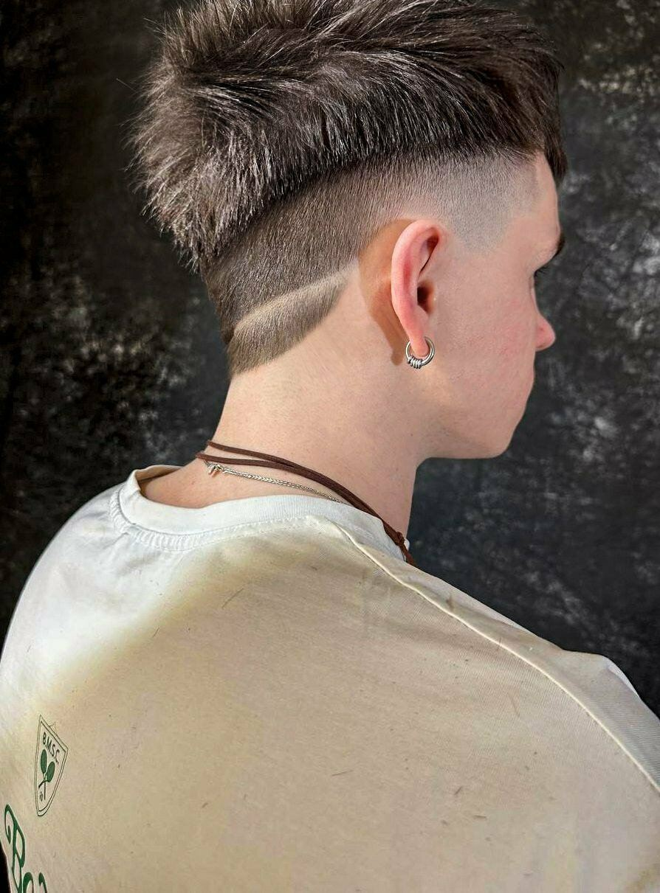
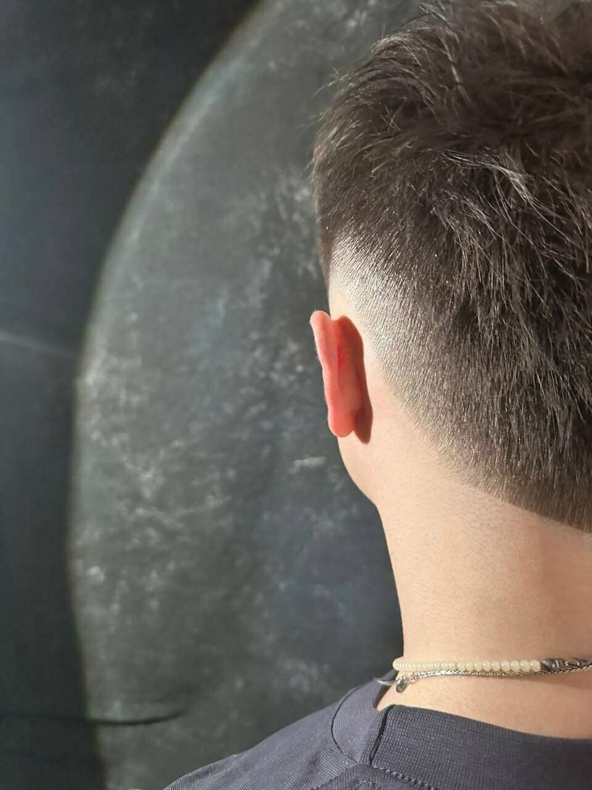
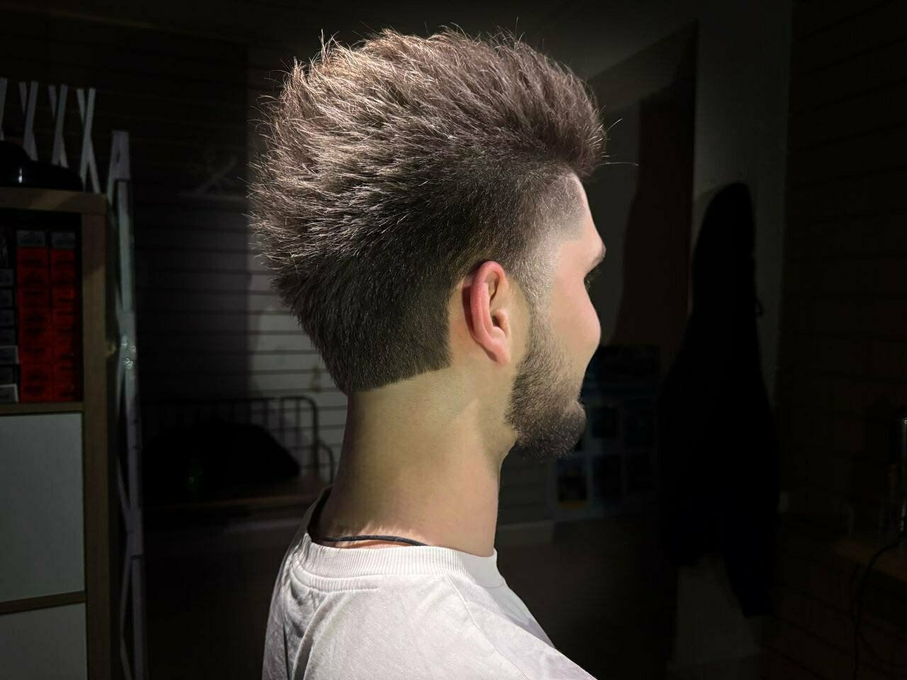

Парикмахерская
Мужские модельные стрижки, женские стрижки с укладкой и окрашивание у метро «Приморская». Работаем каждый день до полуночи.
+7 (931) 237-60-64Каждый день с 10:00 до 24:00 на Наличной, 51 — в 320 метрах от «Приморской». Мужские модельные стрижки, женские стрижки с укладкой, окрашивание седины.
Точную цену уточняйте при записи.
Приятный в общении мастер: сразу обсудили все детали, стрижка и укладка получились прекрасными.
Пришла с неудачной стрижкой — сделали именно то, что я хотела. Быстро, качественно и за хорошую цену. Буду ходить и советовать подругам.
Мастер чувствует, что тебе подойдёт. Креативный и дружелюбный — для тех, кто хочет быть в ногу со временем.



| Понедельник | 10:00–24:00 |
| Вторник | 10:00–24:00 |
| Среда | 10:00–24:00 |
| Четверг | 10:00–24:00 |
| Пятница | 10:00–24:00 |
| Суббота | 10:00–24:00 |
| Воскресенье | 10:00–24:00 |
Позвоните или напишите в мессенджер — подберём мастера и время.
+7 (931) 237-60-64